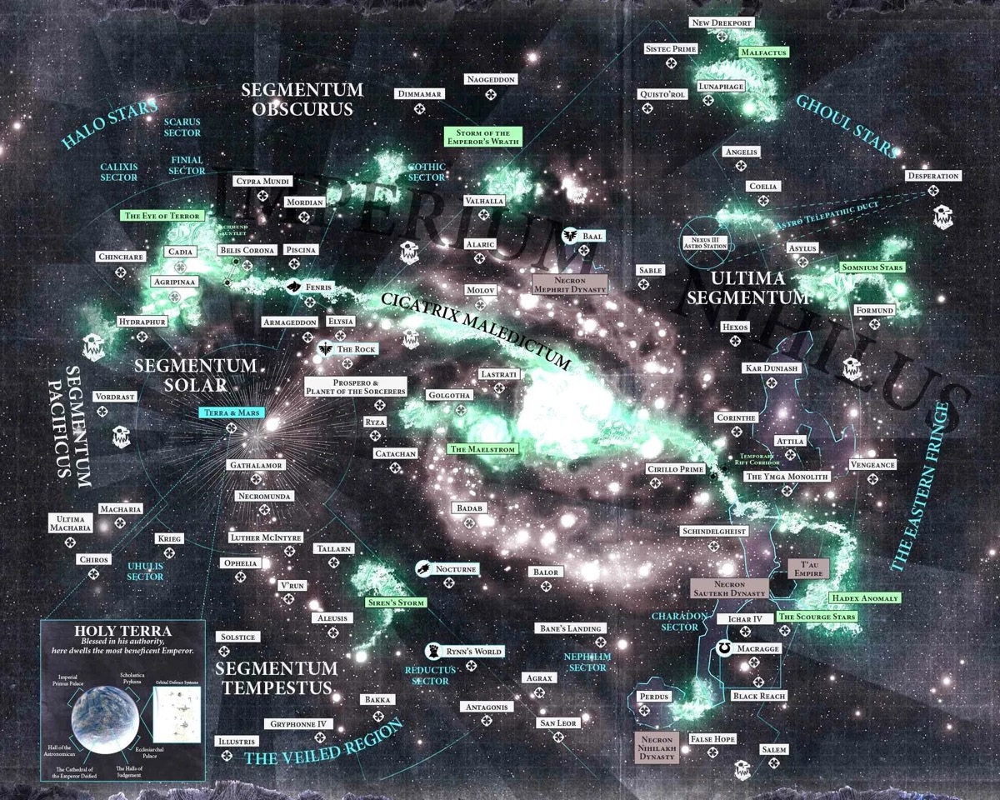

Crone world
| Crone world | |
|---|---|
| Former Aeldari homeworld within the Eye of Terror | |
| Named for | Morai-Heg, the Crone goddess of fate |
| Location | Consumed by the Eye of Terror, in the Segmentum Obscurus |
| Imperial name | Daemon world |
| Controlled by | The Ruinous Powers and their servants |
| Known for | The only source of new Spirit Stones |
A Crone world is one of the original homeworlds that the Aeldari colonised as they rose to power tens of thousands of standard years ago. Together they formed the heart of the Aeldari empire until the birth of Slaanesh led to the Fall and the growth of the Eye of Terror. The Crone worlds were consumed by the warp rift, and their realities became part of the Immaterium.
The Aeldari name these worlds after Morai-Heg, the goddess of fate. The Imperium designates the same worlds as Daemon worlds. They are now domains of the Ruinous Powers and their servants, and many ancient Aeldari souls are trapped there. Those souls yearn for death and for the consumption by Slaanesh that ends their torment.
Spirit Stones and artefacts
[edit]The Crone worlds are the only known source of new Spirit Stones, which the Aeldari need to house their souls after death. Reaching them means entering the most dangerous region of the galaxy. Many craftworld Aeldari who travel there never return. Those who do are often so wounded in mind and spirit that they seek the solace of the Infinity Circuit.
Besides Spirit Stones, the Crone worlds hold other artefacts of the old Aeldari civilisation that survived the Fall. They remain on the worlds for anyone willing to claim them.
Notable Crone worlds
[edit]Imperial and Aeldari records list the following Crone worlds, all within the Eye of Terror or the nearby Gehennabyss Reaches: Belial IV, Iydris, Aktosha, Arach-Cyn, Urum, the World of Immortal Sorrows and Yllen Satari. Many of their systems are unrecorded, and their positions are known only from the accounts of those who survived the journey.
Timeline
[edit]| Date | Event |
|---|---|
| Tens of thousands of years before the Imperial calendar (not dated) | The Aeldari colonise the worlds as homeworlds of their empire |
| Late M30 (estimated)[a] | The Fall of the Aeldari. The birth of Slaanesh draws the Eye of Terror over the worlds. |
| Present | The worlds are domains of the Ruinous Powers, and Aeldari still travel there for Spirit Stones |
See also
[edit] Xenos portal
Xenos portal
Geography portal
Notes
[edit]- ^ The date is inferred from the Fall of the Aeldari. No record gives the year of the Fall.